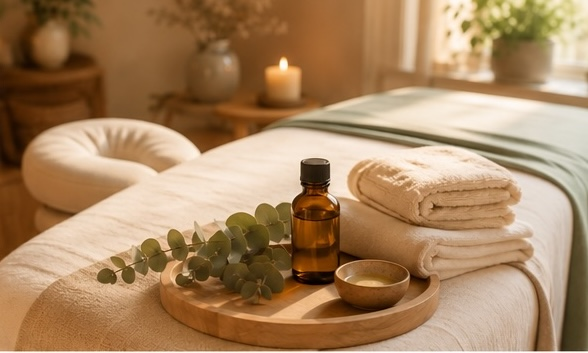
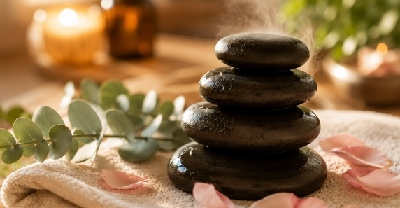

Ralentir, se reconnecter à ses sensations et s'offrir une parenthèse de douceur
Le jardin des rituels propose des massages bien-être pensés comme des moments de détente, de relâchement et de confort. Chaque séance est adaptée au rythme et aux besoins de la personne, dans une ambiance calme et enveloppante, avec des huiles choisies pour leur douceur.


Un massage tout en douceur, aux mouvements lents et enveloppants, pour relâcher les tensions du quotidien et retrouver un état de calme profond. C'est le moment cocooning par excellence, idéal pour une première découverte.
Un massage plus tonique et rythmé, pour réveiller le corps, raviver l'élan et retrouver de la légèreté. Parfait quand on se sent alourdi par la fatigue ou le rythme des journées.
Une attention particulière portée aux pieds, qui portent tant au fil des jours. Ce massage invite à relâcher les tensions, retrouver de la légèreté et se recentrer, dans un moment de détente profonde.
La chaleur douce des pierres associée à un toucher enveloppant : un moment chaleureux et apaisant, propice au relâchement complet. Le rituel douceur des saisons fraîches — et de toutes les autres.
Des gestes lents, des pressions douces et enveloppantes qui suivent le rythme de la respiration. Le corps comprend peu à peu qu'il peut relâcher, l'esprit ralentit. C'est le massage de la pause profonde, idéal pour une première découverte.
Le même toucher bienveillant, mais un rythme plus soutenu : pressions plus franches, frictions douces, enchaînements dynamiques. Là où le relaxant invite à se déposer, le revitalisant réveille l'élan et redonne de la légèreté quand le quotidien pèse.
Les pieds nous portent toute la journée et sont pourtant les grands oubliés. Très sensibles au toucher, ils sont une porte d'entrée étonnante vers la détente de tout le corps : quand les pieds se relâchent, c'est souvent l'ensemble qui respire.
Ce sont des pierres de basalte, une roche volcanique lisse qui retient naturellement la chaleur. Posées et glissées sur le corps, elles diffusent une chaleur douce et constante qui amplifie le relâchement — un rituel chaleureux hérité de traditions ancestrales.
« S'offrir une parenthèse de douceur. »
Prendre rendez-vous